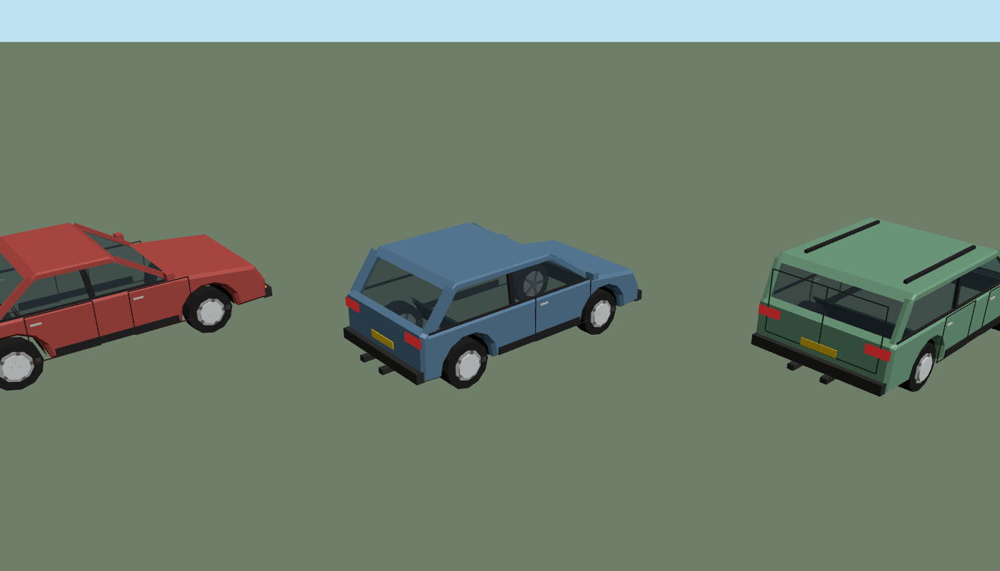
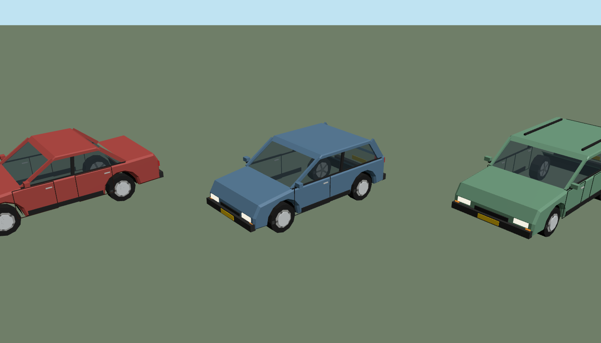
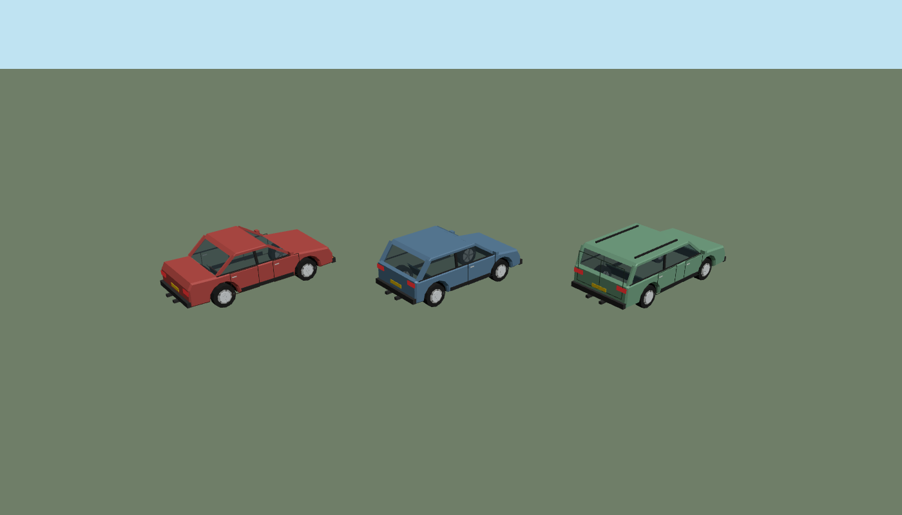
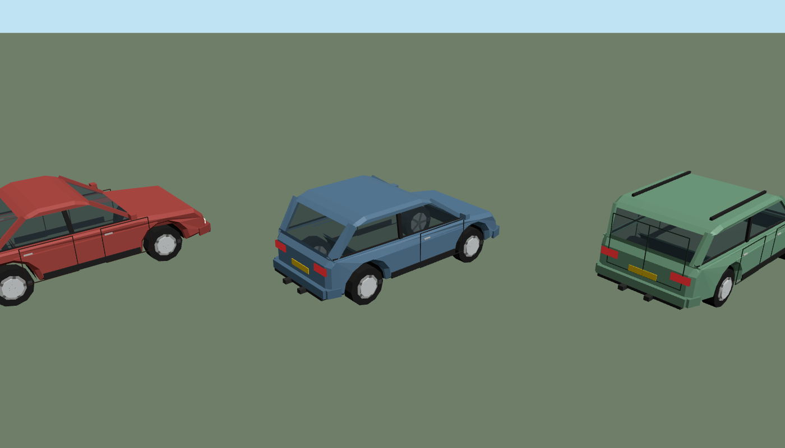
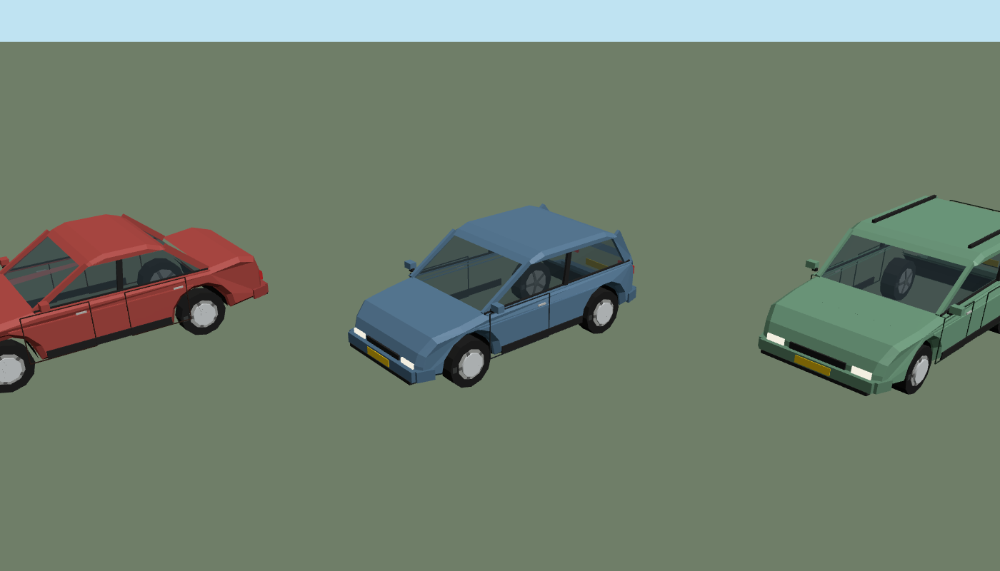
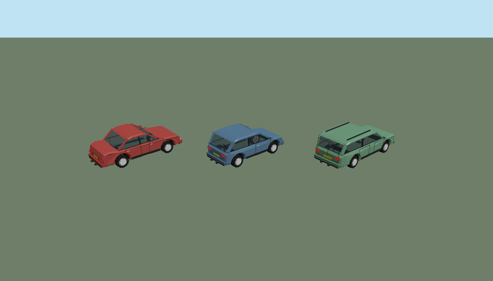

Quaternius (inspiratie)

Waar het zit: een zachte totaalvorm (bol dak en bolle kap, ronde neus en kont, van boven ingelopen hoeken), schuine stijlen, ingelopen ramen, grote heldere koplampen, zachte lakkleuren met glans. Wat ze niet hebben en wij wel: openende deuren met interieur, cabine-LOD, sturende wielen, lichten, deurnaden, kleurvarianten, schade.
Onze oude



Onze nieuwe


